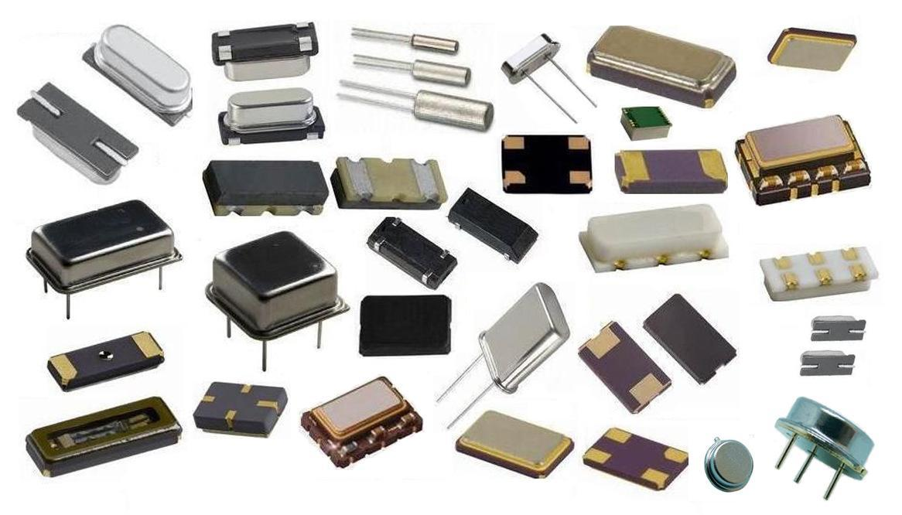
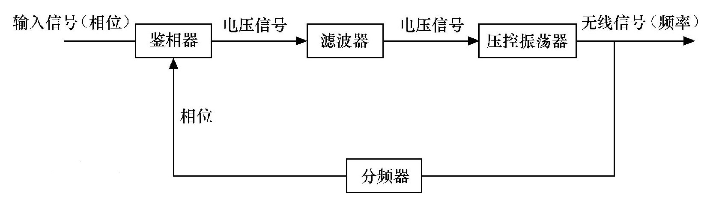
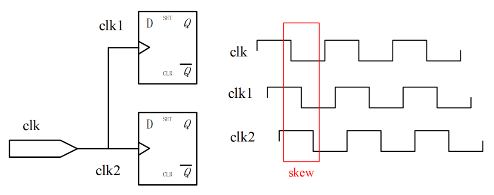
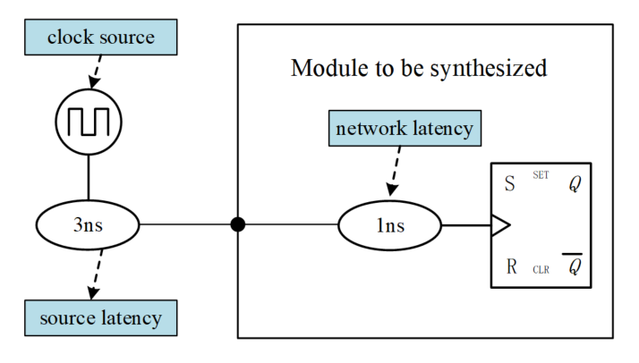
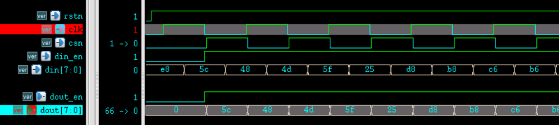

关键词：时钟源，时钟偏移，时钟抖动，时钟转换时间，时钟延时，时钟树，双边沿时钟
几乎稍微复杂的数字设计都离不开时钟。时钟也是所有时序逻辑建立的基础。前面介绍建立时间和保持时间时也涉及过时钟偏移的概念。下面将总结下时钟的相关知识，以便更好的进行数字设计。
时钟源
根据时钟源在数字设计模块中位置的不同，可以将时钟源分为外部时钟源和内部时钟源。
外部时钟源：
RC/LC 振荡电路：利用正反馈或负反馈电路产生周期性变化时钟信号。此类时钟源电路简单，频率变化范围大，但工作频率较低，稳定度不高。
无源/有源晶体振荡器：利用石英晶体的压电效应（压力和电信号可以相互转换）产生谐振信号。此类时钟源频率精度高，稳定性好，噪声低，温漂小。有源晶振中，往往还加入了压控或温度补偿，时钟的相位和频率都有较好的特性。但电路实现相对复杂，频带较窄，频率基本不能调节。

调试特定电路时，往往也会使用一些搭建的特定电路（例如施密特触发器）或信号发生器设备产生的时钟源。
内部时钟源：
锁相环（PLL， Phase Locked Loop）:
利用外部输入的参考信号控制环路内部振荡信号的频率和相位，实现输出信号频率对输入信号频率的自动跟踪，通过反馈通路将信号倍频到一个较高的固定频率。
一般晶振由于工艺与成本原因，做不到很高的频率，利用 PLL 电路就可以实现稳定且高频的时钟。PLL 集成到设计模块的内部，可以保证数字电路具有较好的延迟和稳定性。
时钟分频：有些模块工作频率会低于系统时钟频率，此时就需要对系统时钟进行一定的分频得到频率较低的时钟。
通过在 always 语句块中计数并输出时钟信号，是分频器常用的方法。任意分频比的实现逻辑详见下一节《5.3 时钟分频》。
时钟切换：系统或某些模块的工作频率有时候会在特定状况下改变，例如低功耗模式下需要降频，提高计算能力时需要升频。此时系统往往会有多个时钟源，以备有需求时进行时钟切换。
时钟切换逻辑如果不进行优化，在切换的过度时间内，大概率会出现尖峰脉冲干扰，对电路产生不利影响。安全的切换逻辑，详见后面章节：《5.4 时钟切换》。
数字系统往往会采用外部晶振输入、内部 PLL 进行倍频的方案。再根据设计需求进行时钟分频或时钟切换。
时钟特性
仿真时，所有同步的时钟都是理想的：时钟的翻转是在瞬间完成的，模块之间的时钟沿都是对齐的，没有延迟，没有抖动。实际电路中，时钟在传输、翻转时都会有延迟。完美的数字设计，也应该考虑这些不完美的时钟特性，否则也会造成设计时序不满足的状况。
下面对时钟的一些特性进行简单说明。
时钟偏移（skew）
由于线网的延迟，时钟信号在到达触发器端口时，不能保证不同触发器端口的时钟沿是对齐的，即不同触发器端口的时钟相位存在差异。这种差异称为时钟偏移。示意图如下：

一般时钟偏移与时钟频率没有直接的关系，与走线长度、负载电容、负载数量等因素有关。
时钟抖动（jitter）
相对于理想时钟沿，实际时钟中存在的不随时间积累的、时而超前、时而滞后的偏移称为时钟抖动。可以用抖动频率和抖动幅度对时钟抖动进行定量描述。数字设计中，时钟抖动都是用时间来描述，示意图如下。

时钟抖动可分为随机抖动和固定抖动。
随机抖动的来源为热噪声、半导体工艺等。
固定抖动的来源为开关电源、电磁干扰或其他不合理的布局布线等。
在综合工具 Design Compiler 中，时钟的偏移和抖动统一用不确定度 uncertainty 来统一表示。
转换时间（transition）
时钟从上升沿跳变到下降沿，或者从下降沿跳变到上升沿时，并不是"直上直下"不需要时间完成电平跳变，而是"斜坡式"需要一个过渡时间完成电平跳变。这个过渡时间称之为时钟的转换时间，示意图如下。

转换时间大小与单元库工艺、电容负载等有关。
时钟延时（lantency）
时钟从时钟源（例如晶振、PLL 或分频器输出端）出发到达触发器端口的延迟时间，称为时钟延时。时钟延时包括时钟源延迟（source latency）和时钟网络延迟（network latency），如下图所示。

时钟源延时，是时钟信号从实际时钟原点到设计模块时钟定义点的传输时间。上图所示为 3ns。
时钟网络延时，是从设计模块时钟定义点到模块内触发器时钟端的传输时间，传输路径上可能经过缓冲器（buffer）。上图所示为 1ns。
时钟源延时（source latency）是设计模块内所有触发器共有的延时，所以不会影响时钟偏移（skew）。
时钟树
数字设计时各个模块应当使用同步时钟电路，同步电路中被相同时钟信号驱动的触发器共同组成一个时钟域。理想电路中，时钟信号会同时到达同时钟域所有触发器的时钟端。但是实际中因为各种延迟的存在，这种无延迟的时钟特性是很难实现的。而且时钟信号的驱动能力有限，难以独立的为一个包含较多的触发器的时钟域提供有效扇出。为解决时钟延迟与驱动的问题，就需要采用时钟树系统对时钟信号进行管理，来确保良好的时序和驱动能力。
时钟树，是个由许多缓冲单元 (buffer cell) 平衡搭建的网状结构。一般由一个时钟源点，经一级一级的缓冲单元搭建而成。增加 clock buffer（图中橙色三角模块） 的实际时钟树结构如下所示。

时钟树并不是来减少时钟信号到达各个触发器的时间，而是减少到达各个触发器之间的时间差异。一般是后端设计人员通过插入 clock buffer 完成时钟树的设计。前端设计人员，往往需要保证时钟方案与数字逻辑的功能正确性。
其他时钟分类：
同步、异步时钟
《4.1 同步与异步》中有详细说明，当时钟同源且满足整数倍关系是，一般可以认为时钟是同步的。数字设计中同步时钟的定义比较宽泛。同时钟域下的逻辑不需要进行同步处理。
下面从同步电路的角度来理解同步时钟的概念。
同步电路是由时序和组合逻辑电路构成的电路。同步电路的特点是各触发器的时钟端全部连接在一起，并接在系统时钟端。只有当时钟脉冲到来时，电路的状态才能改变。改变后的状态将一直保持到下一个时钟脉冲的到来。这期间无论外部输入 x 有无变化，状态表中的每个状态都是稳定的。
门控时钟
门控时钟的基本原理：使能信号有效的时候，打开时钟。使能信号无效的时候，关闭时钟。

由于门控时钟可以将工作时钟在适合的时间关闭，所以门控时钟在低功耗设计中有着广泛应用。门控时钟最简单是实现逻辑是将使能信号直接与时钟信号做"与"操作，但这样是不安全的，容易出现毛刺现象。详细门控时钟介绍请参考《6.4 RTL 级低功耗设计（下）》。
双边沿时钟
某些模块可以在时钟的上升沿和下降沿都进行数据传输，达到速率增倍的效果。
DDR (Double Data Rate) SDRAM 是典型的采用双边沿传输数据的例子。
典型 DDR 数据传输示意图如下。

下面对时钟双边沿传输数据的行为进行一个简单的仿真。
基本设计思路是，利用时钟双边沿对数据进行读取，然后通过与时钟相反的片选信号对数据进行选择输出，完成数据在时钟双边沿的传输。
Verilog 代码描述如下 。
实例
input rstn ,
input clk,
input csn,
input [7:0] din,
input din_en,
output [7:0] dout,
output dout_en);
//capture at posedge
reg [7:0] datap_r ;
reg datap_en_r ;
always @(posedge clk or negedge rstn) begin
if (!rstn) begin
datap_r <= 'b0 ;
datap_en_r <= 1'b0 ;
end
else if (din_en) begin
datap_r <= din ;
datap_en_r <= 1'b1 ;
end
else begin
datap_en_r <= 1'b0 ;
end
end
//capture at negedge
reg [7:0] datan_r ;
reg datan_en_r ;
always @(negedge clk or negedge rstn) begin
if (!rstn) begin
datan_r <= 'b0 ;
datan_en_r <= 1'b0 ;
end
else if (din_en) begin
datan_r <= din ;
datan_en_r <= 1'b1 ;
end
else begin
datan_en_r <= 1'b0 ;
end
end
assign dout = !csn ? datap_r : datan_r ;
assign dout_en = datan_en_r | datap_en_r ;
endmodule
testbench 描述如下，其中双边沿数据传输模块的时钟频率为 100MHz，但输入的数据速率为 200MHz。
实例
module test ;
reg clk_100mhz, clk_200mhz ;
reg rstn ;
reg csn ;
reg [7:0] din ;
reg din_en ;
wire [7:0] dout ;
wire dout_en ;
always #(2.5) clk_200mhz = ~clk_200mhz ;
always @(posedge clk_200mhz)
clk_100mhz = ~clk_100mhz ;
initial begin
clk_100mhz = 0 ;
clk_200mhz = 0 ;
rstn = 0 ;
din = 0 ;
din_en = 0 ;
csn = 0 ;
//start work
#11 rstn = 1 ;
@(negedge clk_100mhz) ;
din_en = 1 ;
#0.2 ;
csn = 1 ; //csn=1 时输出下降沿采集的数据
//generate csn
forever begin
@(posedge clk_100mhz) ;
#0.2 ; //增加些许延迟确保数据采集正确
csn = 0 ; //csn=0 时输出上升沿采集的数据
@(negedge clk_100mhz) ;
#0.2 ;
csn = 1 ; //csn=1 时输出下降沿采集的数据
end
end
always @(negedge clk_200mhz) begin
din <= {$random()} % 8'hFF ; //产生传输的随机数据
end
double_rate u_double_rate(
.rstn (rstn),
.clk (clk_100mhz),
.csn (csn),
.din (din),
.din_en (din_en),
.dout (dout),
.dout_en (dout_en));
initial begin
forever begin
#100;
if ($time >= 10000) $finish ;
end
end
endmodule // test
前几个数据的仿真结果如下。
由图可知，数据传输正常，且速率为时钟频率的 2 倍。

本次只是对时钟双边沿传输数据进行简单的仿真，并不是仿真 DDR 的工作原理。DDR 双倍速率传输数据的工作原理远比此次仿真复杂的多。
但是一般情况下，不建议使用双边沿时钟逻辑，主要有以下几点原因。
always 块中，不能同时使用上升沿和下降沿作为敏感列表，也不能在 2 个always 块中为同一个变量赋值，例如下列描述就是错误的。虽然 RTL 编译可能不会报错，但也不能综合成实际电路。这就导致了信号间通信的难度。
always @(posedge clk or negedge clk) begin
数据传输速率是数据时钟频率的两倍，如果使用时钟上升沿和下降沿逻辑进行 RTL 建模，则还需要翻转速率和时钟一致的片选信号；如果不使用片选信号，模块内应该引入数据时钟频率 2 倍的同源时钟信号，才可以正常对数据进行选择。
当使用的双边沿时钟逻辑之后，需要对上升沿和下降沿都进行合理的约束。时钟约束就会变得复杂，布局布线要求更加严格，调试难度增加。
使用时钟双边沿进行设计，要求时钟的质量很高，设计时钟树时也需要考虑众多因素。

点我分享笔记